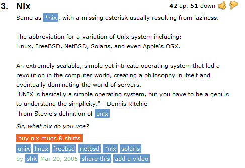

'Nix'ology
Roots of 'nix'
- Urban Dictionary
- No Evil
- Chief Nixers Alma Mater
Mythological connection
- German Water Spirit
- Sanskrit wash
- Theoder's White Horse
- Chinese Sacred Fire Bird
- Greek Trojan War
Scientific Connection
- Moon of Pluto
- Nano Physics
'Nix'ology

|
|
No Evil *nix Operating Systems Try remain simple like all *nix operating systems, do ‘no evil’ at any cost. All *nix are the simplest operating systems written till date in the world, we’ve to be a geek hack to understand the simplicity of it! |
|
 Chief Nixer's Alma Mater, MicroSoft & it's famous Fixlttool | |
| As like their other products and services, Microsoft was pioneer in this fix tool space also.
But did they let the ‘Fix it’ realize the concept, tool, model’s full potential by being industry neutral and adding more functionality towards the overall health posture of the machine ? Go, Figure ! |
|
Are we in mission to give you a service which’ll help you fix your desktop issues? No, we’re in a mission to help you create cool web applications without security issues in our first round of nixing the world to make a dent. Disclaimer: We will make our attempts not to just Fix like ‘Fix it’ one time, must ‘Nix’ the rootcause of all perennial security problems. Information security management system(ISMS) getting developed by FixNix will help you in all aspects of your organization’s security, privacy, compliance & governance. |
Neck (Water Spirit) Few Nixers said there’s mythological connection with our name Nix. As we’re in Security business which by itself is a mythological stuff doesn’t exist for many, it’ll suit well. |
'Nix'ology
| Water Spirit of Germany | |
| By naming Nix, we’ll become the Water Spirit appearing in human form (only in Germany)
{Other countries, we’re figuring out in what form we may be perceived as ‘White Horse’ or ‘Washer men’}
The Rhine maidens warn Siegfried by Arthur Rackham, 1912. Indian Pride Sanskrit says 'Wash' & etymologically connecting with german word *nikwus The names are held to derive from Common Germanic *nikwus or *nikwis(i), derived from PIE *neigw (“wash”). It is related to Sanskrit nḗnēkti (“wash”), Greek νίζω nízōand νίπτω níptō, and Irish nigther. |
White Horse of Theodor | |
The Neck as a brook horse by Theodor Kittelsen, a depiction of the Neck as a white horse |
'Nix'ology
Fire Bird of Phoenix | |
| The phoenix, or phenix, is a mythical sacred fire bird that can be found in the mythologies of the Arabian, Persians, Greeks, Romans, Egyptians, Chinese, Indians and (according to Sanchuniathon)Phoenicians/Canaanites. It is described as a bird with a colorful plumage and a tail of gold and scarlet (or purple, blue, and green according to some legends). It has a 500 to 1000 year life-cycle, near the end of which it builds itself a nest of twigs that then ignites; both nest and bird burn fiercely and are reduced to ashes, from which a new, young phoenix or phoenix egg arises, reborn anew to live again.The new phoenix is destined to live as long as its old self. |
|
All Nixers of FixNix will be the fire bird which awakes from ashes and kill our enemies. Some Nixer even prepared an illustration, Phoenix: “Hello World ! we are reborn anew to live again, we are Phoenix ! “ |
Trojan War | |
| In Greek mythology, Phoenix , son of Amyntor and Cleobule, is one of the Myrmidons led by Achilles in the Trojan War. Phoenix’s warfaring identity is a charioteer. Of Phoenix’s life before the Trojan War it is related that he was falsely accused by his father’s concubine, Phthia or Clytia, of an attempt to seduce her; alternatively, he actually did seduce her at the instigation of his mother. Having heard about that, Amyntor punished his son by either blinding him or cursing him with infertility. Phoenix fled to Peleus, who in his turn took him to Chiron; the latter restored Phoenix’s sight, whereupon Peleus made Phoenix king of theDolopes.He participated in the hunt for the Calydonian Boar. The Greek Phoenix was some part of the Trojan war by tutoring Achilles. |
| “So you, Achilles- great godlike Achilles I made you my son, I tried, so someday you might fight disaster off my back. But now, Achilles, beat down your mounting fury! It’s wrong to have such an iron, ruthless heart.” Our Nixers of FixNix Phoenix made the spoof ready: “Hello city of Trojans ! we’re here to kill you, we were taught by Phoenix ! “ |
'Nix'ology
Planet Pluto's Moon | |
We’ll be the only ‘Moon’ of the Information Security industry, neither sun nor earth/any planet. There are too many suns, terrestrial planets like the information security consulting companies, certifying bodies concentrating on only specific areas. |
Nanophysical Connection ? are you building reactors |
PHENIX is one experiment specialized in detecting rare and electromagnetic particles, using a partial coverage detector system in a superconductively generated axial magnetic field in RHIC is now the second-highest-energy heavy-ion collider in the world. The Relativistic Heavy Ion Collider (RHIC) is one of only two operating heavy-ion colliders, and the only spin-polarized proton collider ever built. Located atBrookhaven National Laboratory (BNL) in Upton, New York, and used by an international team of researchers, it is the only operating particle collider in the US.By using RHIC to collide ions traveling at relativistic speeds, physicists study the primordial form of matter that existed in the universe shortly after the Big Bang.[By colliding spin-polarized protons, the spin structure of the proton is explored. The six interaction points (between the particles circulating in the two rings) are at the middle of the six relatively straight sections, where the two rings cross, allowing the particles to collide. The interaction points are enumerated by clock positions, with the injection near 6 o’clock. Two large experiments, STAR and PHENIX, are located at 6 and 8 o’clock respectively. Don’t ask us whether we’re going to collide ions in FixRNix. We may diversify in our subsequent rounds of the enterprise. But certainly our Nixing experiments will collide electrons flowing in your wires, to help you stay secure through an appropriate management system. |
'Nix'ology
Phoenix is the capital, and largest city, of the U.S. state of Arizona, as well as the sixth most populous city in the United States of America, and is also the most populous state capital in the United States. |
Slang of lowa Are we planning to grow big like the city of Phoenix ? May be a little later! Do we mean we’re the sixth enterprise in this GRC/ISMS vertical as of now ? Figure out ! Loras college and other institutions in Iowa state use the word ‘Nix’ in their slang often to mean ‘nullified’ or ‘postponed’ |
We’d like to take inspiration from Iowans to Nix the security issues permanently. |
|
Somehow we cooked up dozen reasons for naming the firm as’FixNix’ Thanks to WhatRhymesWith Etymology Competition Are there any other reason to name us FixNix ? Ping your thoughtful, funny entries here ! 3 Take aways.. 1. Best entries selected will feature here in ‘Nix’ology 2. The persons submitted will be designated as ‘The Messiah Nixer’ 3. As an evangeliser of FixRNix officially they’ll be featured under Co-Nixers section |